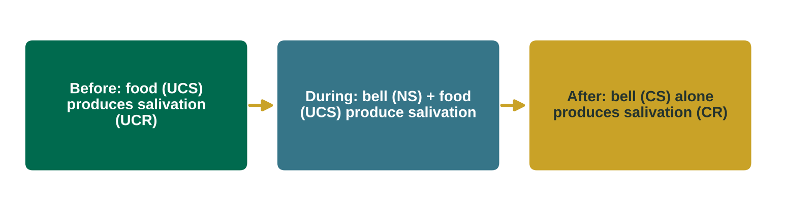
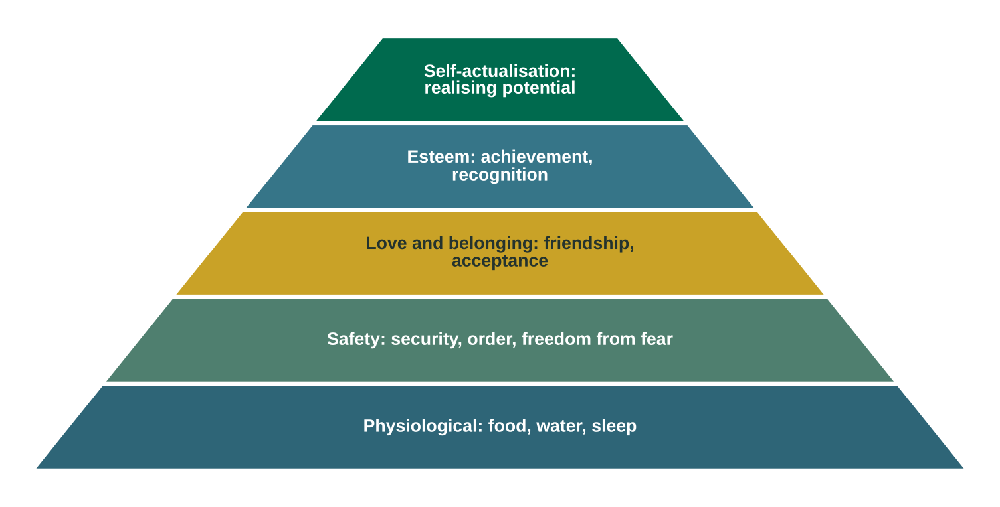
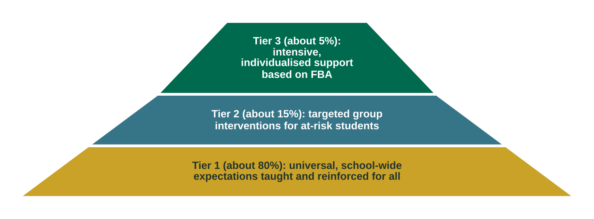

<!doctype html>
<html lang="en">
<head>
<meta charset="utf-8">
<meta name="viewport" content="width=device-width, initial-scale=1">
<title>PC 113 Educational Psychology</title>
<meta name="description" content="Brain, learning theories, motivation, emotion, intelligence, creativity and classroom management">
<link rel="icon" href="assets/favicon.svg" type="image/svg+xml">
<link rel="preconnect" href="https://fonts.googleapis.com">
<link rel="preconnect" href="https://fonts.gstatic.com" crossorigin>
<link rel="stylesheet" href="https://fonts.googleapis.com/css2?family=Fraunces:opsz,wght@9..144,400;9..144,500;9..144,600&family=Inter:wght@400;500;600;700&family=Noto+Serif+Bengali:wght@400;600&family=Source+Serif+4:ital,opsz,wght@0,8..60,400;0,8..60,600;1,8..60,400&display=swap">
<link rel="stylesheet" href="assets/style.css">
<script>try{var t=localStorage.getItem('theme');if(t)document.documentElement.dataset.theme=t}catch(e){}</script>
</head>
<body>
<a class="skip-link" href="#main">Skip to main content</a>
<header class="top">
  <button class="menu-btn" id="menuBtn" aria-label="Open course menu" aria-expanded="false">
    <svg viewBox="0 0 24 24" width="22" height="22" aria-hidden="true"><path d="M3 6h18M3 12h18M3 18h18" stroke="currentColor" stroke-width="2" stroke-linecap="round"/></svg>
  </button>
  <a class="brand" href="index.html"><span class="brand-mark" aria-hidden="true"><svg viewBox="0 0 32 32" width="30" height="30"><circle cx="16" cy="16" r="15" fill="none" stroke="currentColor" stroke-width="1.2"/><path d="M8 12.5 16 9l8 3.5-8 3.5z" fill="currentColor"/><path d="M11 14.2v4.3c0 1.6 2.2 2.9 5 2.9s5-1.3 5-2.9v-4.3" fill="none" stroke="currentColor" stroke-width="1.3"/></svg></span><span class="brand-text">Education <em>Study Notes</em></span></a>
  <div class="search" role="search">
    <input id="q" type="search" placeholder="Search all notes" autocomplete="off" aria-label="Search all notes">
    <div id="results" class="results" hidden></div>
  </div>
  <button class="theme-btn" id="themeBtn" aria-label="Switch light or dark mode">
    <svg viewBox="0 0 24 24" width="20" height="20" aria-hidden="true"><path d="M21 12.8A9 9 0 1 1 11.2 3a7 7 0 0 0 9.8 9.8z" fill="currentColor"/></svg>
  </button>
</header>
<div class="layout">
<nav class="side" id="side" aria-label="Courses">
<a class="side-home" href="index.html">Home</a>
<a class="side-home" href="practice.html">MCQ practice</a>
<div class="side-group"><div class="side-glabel">B.Ed (Hons) core courses</div><ul>
<li><a href="pc111.html"><span class="code">PC 111</span> Introduction to Education</a>
</li>
<li><a href="pc112.html"><span class="code">PC 112</span> Education in Bangladesh</a>
</li>
<li class="current"><a href="pc113.html"><span class="code">PC 113</span> Educational Psychology</a>
<ul class="side-toc">
<li><a href="#unit-1-introduction-to-educational-psychology" data-toc="unit-1-introduction-to-educational-psychology">Unit 1: Introduction to Educational Psychology</a></li>
<li><a href="#unit-2-biological-basis-of-behaviour-and-learning" data-toc="unit-2-biological-basis-of-behaviour-and-learning">Unit 2: Biological Basis of Behaviour and Learning</a></li>
<li><a href="#unit-3-learning-theories-and-applications" data-toc="unit-3-learning-theories-and-applications">Unit 3: Learning Theories and Applications</a></li>
<li><a href="#unit-4-motivation-and-learning" data-toc="unit-4-motivation-and-learning">Unit 4: Motivation and Learning</a></li>
<li><a href="#unit-5-emotion-and-learning" data-toc="unit-5-emotion-and-learning">Unit 5: Emotion and Learning</a></li>
<li><a href="#unit-6-intelligence-and-creativity" data-toc="unit-6-intelligence-and-creativity">Unit 6: Intelligence and Creativity</a></li>
<li><a href="#unit-7-classroom-management" data-toc="unit-7-classroom-management">Unit 7: Classroom Management</a></li>
<li><a href="#reading-list" data-toc="reading-list">Reading List</a></li>
<li><a href="#exam-preparation-bank" data-toc="exam-preparation-bank">Exam Preparation Bank</a></li>
<li><a href="#references" data-toc="references">References</a></li>
</ul>
</li>
<li><a href="pc114.html"><span class="code">PC 114</span> Instructional Technology</a>
</li>
<li><a href="pc115.html"><span class="code">PC 115</span> Philosophical Foundation of Education</a>
</li>
<li><a href="pc116.html"><span class="code">PC 116</span> Sociological Foundation of Education</a>
</li>
<li><a href="pc117.html"><span class="code">PC 117</span> Introduction to Educational Assessment</a>
</li>
<li><a href="pc118.html"><span class="code">PC 118</span> Organisation and Management of Educational Institutions</a>
</li>
<li><a href="pc119.html"><span class="code">PC 119</span> Education and Development</a>
</li>
<li><a href="pc120.html"><span class="code">PC 120</span> Introduction to Curriculum</a>
</li>
<li><a href="pc121.html"><span class="code">PC 121</span> Value Education</a>
</li>
<li><a href="pc122.html"><span class="code">PC 122</span> Gender Education</a>
</li>
<li><a href="pc123.html"><span class="code">PC 123</span> Environmental Education</a>
</li>
<li><a href="pc124.html"><span class="code">PC 124</span> Nonformal and Lifelong Education</a>
</li>
<li><a href="pc125.html"><span class="code">PC 125</span> Introduction to Educational Research</a>
</li>
<li><a href="pc126.html"><span class="code">PC 126</span> Statistics in Education</a>
</li>
<li><a href="pc127.html"><span class="code">PC 127</span> Inclusion in Education</a>
</li>
</ul></div>
<div class="side-group"><div class="side-glabel">M.Ed courses</div><ul>
<li><a href="ed501.html"><span class="code">ED 501</span> Education in Global Perspective</a>
</li>
<li><a href="ed502.html"><span class="code">ED 502</span> Policy, Strategy and Leadership in Education</a>
</li>
<li><a href="ed503.html"><span class="code">ED 503</span> Information and Communication Technology in Education</a>
</li>
<li><a href="ed504.html"><span class="code">ED 504</span> Methods and Techniques of Educational Research</a>
</li>
<li><a href="eer580.html"><span class="code">EER 580</span> Statistics in Educational Research</a>
</li>
<li><a href="eer581.html"><span class="code">EER 581</span> Research for Educational Changes</a>
</li>
<li><a href="eer582.html"><span class="code">EER 582</span> Assessment and Evaluation Techniques in Education</a>
</li>
<li><a href="eer583.html"><span class="code">EER 583</span> Practicing Educational Research</a>
</li>
</ul></div>
<div class="side-group"><div class="side-glabel">Open and Distance Learning</div><ul>
<li><a href="odl.html"><span class="code">ODL</span> Open and Distance Learning</a>
</li>
</ul></div>
<div class="side-group"><div class="side-glabel">Beyond the syllabus</div><ul>
<li><a href="trends-2026.html"><span class="code">Trends 2026</span> Education Today: News, Trends, Theories and Approaches Every Educator Should Know</a>
</li>
</ul></div>
</nav>
<div class="scrim" id="scrim"></div>
<main class="main" id="main" tabindex="-1">

<article class="course" data-course="pc113.html">
<header class="hero">
  <div class="kicker">B.ED (HONS) CORE COURSE · STUDENT STUDY NOTES</div>
  <h1 class="course-title"><span class="code-pill">PC 113</span> Educational Psychology</h1>
  <p class="subtitle">Brain, learning theories, motivation, emotion, intelligence, creativity and classroom management</p>
  <dl class="meta"><div><dt>Credit Hours</dt><dd>4</dd></div><div><dt>Units</dt><dd>7</dd></div><div><dt>Built On</dt><dd>Course syllabus; Woolfolk (2019), Santrock (2018), Slavin (2018), Schunk (2020) and primary theoretical sources</dd></div></dl>
  <div class="hero-actions"><button type="button" class="btn tts-btn" data-tts="all" aria-label="Listen to all of these notes from the beginning"><span aria-hidden="true">▶</span> Listen to all notes</button><a class="btn ghost" href="pdf/pc113.pdf" download>Download PDF</a><a class="btn ghost" href="practice.html?course=pc113.html">Practise MCQs</a><a class="btn ghost" href="#reading-list">Reading list</a></div>
  <div class="progress"><div class="bar"><span id="pbar"></span></div><span id="ptext"></span></div>
</header>
<details class="toc" open><summary>Contents</summary><ol><li><a href="#unit-1-introduction-to-educational-psychology">Unit 1: Introduction to Educational Psychology</a><span class="tick" data-tick="unit-1-introduction-to-educational-psychology"></span></li><li><a href="#unit-2-biological-basis-of-behaviour-and-learning">Unit 2: Biological Basis of Behaviour and Learning</a><span class="tick" data-tick="unit-2-biological-basis-of-behaviour-and-learning"></span></li><li><a href="#unit-3-learning-theories-and-applications">Unit 3: Learning Theories and Applications</a><span class="tick" data-tick="unit-3-learning-theories-and-applications"></span></li><li><a href="#unit-4-motivation-and-learning">Unit 4: Motivation and Learning</a><span class="tick" data-tick="unit-4-motivation-and-learning"></span></li><li><a href="#unit-5-emotion-and-learning">Unit 5: Emotion and Learning</a><span class="tick" data-tick="unit-5-emotion-and-learning"></span></li><li><a href="#unit-6-intelligence-and-creativity">Unit 6: Intelligence and Creativity</a><span class="tick" data-tick="unit-6-intelligence-and-creativity"></span></li><li><a href="#unit-7-classroom-management">Unit 7: Classroom Management</a><span class="tick" data-tick="unit-7-classroom-management"></span></li><li><a href="#reading-list">Reading List</a><span class="tick" data-tick="reading-list"></span></li><li><a href="#exam-preparation-bank">Exam Preparation Bank</a><span class="tick" data-tick="exam-preparation-bank"></span></li><li><a href="#references">References</a><span class="tick" data-tick="references"></span></li></ol></details>
<div class="prose">


<h3 id="about-this-course">About this course</h3>
<p>Educational psychology is the scientific study of how people learn and develop in educational settings and how teaching can be designed to support that learning. These notes move from the biological basis of behaviour, through behaviourist, cognitive, constructivist and connectivist theories of learning, to motivation, emotion, intelligence, creativity and positive classroom management. Each theory is followed by its classroom implications, because examiners expect you to move from theory to practice.</p>
<h3 id="course-objectives">Course objectives</h3>
<ul>
<li><p>Understand the theoretical and practical aspects of educational
psychology and apply them in the classroom.</p></li>
<li><p>Comprehend the concept of motivation and apply it in teaching and
learning.</p></li>
<li><p>Understand the role of emotion in teaching and learning.</p></li>
<li><p>Gain the knowledge and skills of classroom management, including
Positive Behaviour Support.</p></li>
</ul>


<div class="box box-howto"><div class="box-label">How To Use These Notes</div>
<p>Each unit follows the official syllabus order. Read the narrative
first, then the <strong>Key point</strong> boxes, then test yourself
with the <strong>Exam focus</strong> questions.</p>
<p>Golden boxes = must-remember ideas. Teal boxes = definitions and study tips. Green boxes = Bangladesh context.</p>
<p>The final chapter is a question bank (MCQs with answers, short and broad questions) in the style of university examinations, followed by full references in APA 7th style.</p>
<p>Statistics on enrolment, budgets and policies change every year. Before an exam, check the latest BANBEIS, DPE, UGC and UNESCO figures.</p></div>
<h1 id="unit-1-introduction-to-educational-psychology">Unit 1:
Introduction to Educational Psychology</h1><div aria-label="Tools for Unit 1: Introduction to Educational Psychology" class="unit-tools" role="group"><button aria-label="Listen to Unit 1: Introduction to Educational Psychology" class="tts-btn" data-target="unit-1-introduction-to-educational-psychology" data-tts="unit" type="button"><span aria-hidden="true">▶</span> Listen to this chapter</button><button aria-label="Listen to the summary of Unit 1: Introduction to Educational Psychology" class="tts-btn" data-target="sum-unit-1-introduction-to-educational-psychology" data-tts="summary" type="button"><span aria-hidden="true">▶</span> Listen to summary</button><button class="done-btn" data-unit="unit-1-introduction-to-educational-psychology" type="button">Mark as studied</button></div><details class="unit-summary" id="sum-unit-1-introduction-to-educational-psychology"><summary>Chapter summary</summary><div class="sum-body"><p>Psychology is the scientific study of behaviour and mental processes. Educational psychology applies psychological theory and research to teaching and learning.</p><p><strong>This chapter covers:</strong> Concept; Scope; Methods of educational psychology.</p><p><strong>Key terms:</strong></p><ul><li>Educational psychology : The branch of psychology that studies human learning and development in educational settings, the psychology of teaching, and the social psychology of schools as organisations.</li></ul><p><strong>Key points to remember:</strong></p><ul><li>Exam answers on methods should end with a sentence on ethics : informed consent, protection from harm, confidentiality and special care with minors.</li></ul></div></details><details class="curriculum" open=""><summary><span class="cur-label">What the curriculum says</span><span class="cur-unit">Unit 1: Introduction to Educational Psychology · 5 contact hours</span></summary><div class="cur-h">Learning outcomes</div><p class="cur-lead">At the end of this unit learners will be able to</p><ol type="a"><li>explain the concept and scope of educational psychology</li><li>analyze the methods of educational Psychology</li></ol><div class="cur-h">Content</div><ul><li>Concept of Educational Psychology</li><li>Scope of Educational Psychology</li><li>Methods of Educational Psychology</li></ul></details>
<h2 id="concept">1.1 Concept</h2>
<p><strong>Psychology</strong> is the scientific study of behaviour and
mental processes. <strong>Educational psychology</strong> applies
psychological theory and research to teaching and learning. Woolfolk
(2019) defines it as "the discipline concerned with teaching and
learning processes; it applies the methods and theories of psychology
and has its own as well". E. L. Thorndike, often called the father of
educational psychology, launched the <em>Journal of Educational
Psychology</em> in 1910. Its central questions are: how do people learn,
why do they differ, what motivates them, and how can teaching be
organised to help them learn?</p>
<div class="box box-def"><div class="box-label">Definition</div>
<p><strong>Educational psychology</strong>: The branch of psychology
that studies human learning and development in educational settings, the
psychology of teaching, and the social psychology of schools as
organisations.</p></div>
<h2 id="scope">1.2 Scope</h2>
<p></p>
<p><strong>Figure 1.</strong> <em>The scope of educational
psychology</em></p>
<ul>
<li><p><strong>The learner:</strong> physical, cognitive, social and
emotional development; heredity and environment; individual differences
in intelligence, aptitude and personality.</p></li>
<li><p><strong>The learning process:</strong> theories of learning,
memory and forgetting, transfer of learning, problem solving.</p></li>
<li><p><strong>The learning situation:</strong> classroom climate, group
dynamics, instructional technology.</p></li>
<li><p><strong>The teacher:</strong> effective teaching characteristics,
teacher expectations (the Pygmalion effect; Rosenthal &amp; Jacobson,
1968), teacher stress and wellbeing.</p></li>
<li><p><strong>Motivation, emotion and wellbeing.</strong></p></li>
<li><p><strong>Measurement and evaluation:</strong> tests of
achievement, intelligence and personality.</p></li>
<li><p><strong>Guidance and counselling, mental health and inclusive
education.</strong></p></li>
</ul>
<h2 id="methods-of-educational-psychology">1.3 Methods of educational
psychology</h2>
<div class="table-wrap"><table>

<thead>
<tr class="header">
<th><strong>Method</strong></th>
<th><strong>Description</strong></th>
<th><strong>Strengths</strong></th>
<th><strong>Limitations</strong></th>
</tr>
<tr class="odd">
<th><strong>Introspection</strong></th>
<th>Self-observation of one's own mental processes (Wundt,
Titchener)</th>
<th>Direct access to experience</th>
<th>Subjective; not possible for young children</th>
</tr>
<tr class="header">
<th><strong>Observation (naturalistic, participant,
structured)</strong></th>
<th>Systematic recording of behaviour in real settings</th>
<th>Natural, ecologically valid</th>
<th>Observer bias; time-consuming; cannot show causation</th>
</tr>
<tr class="odd">
<th><strong>Experimental method</strong></th>
<th>Manipulating an independent variable and measuring its effect on a
dependent variable with control of other variables</th>
<th>Establishes cause and effect</th>
<th>Artificial settings; ethical limits</th>
</tr>
<tr class="header">
<th><strong>Case study (clinical)</strong></th>
<th>In-depth study of one individual or group using many sources</th>
<th>Rich detail; useful for special needs</th>
<th>Not generalisable</th>
</tr>
<tr class="odd">
<th><strong>Survey / questionnaire</strong></th>
<th>Collecting self-reported data from large samples</th>
<th>Efficient; broad coverage</th>
<th>Response bias; shallow</th>
</tr>
<tr class="header">
<th><strong>Correlational method</strong></th>
<th>Measuring the relationship between two variables</th>
<th>Shows association and allows prediction</th>
<th>Correlation is not causation</th>
</tr>
<tr class="odd">
<th><strong>Developmental methods: longitudinal and
cross-sectional</strong></th>
<th>Following the same group over time, or comparing age groups at one
time</th>
<th>Show developmental change</th>
<th>Longitudinal studies are costly and suffer attrition;
cross-sectional ones have cohort effects</th>
</tr>
<tr class="header">
<th><strong>Action research</strong></th>
<th>Teachers studying their own practice in cycles of
plan–act–observe–reflect</th>
<th>Directly improves practice</th>
<th>Limited generalisability</th>
</tr>
</thead>
<tbody>
</tbody>
</table></div>
<div class="box box-key"><div class="box-label">Key Point</div>
<p>Exam answers on methods should end with a sentence on
<strong>ethics</strong>: informed consent, protection from harm,
confidentiality and special care with minors.</p></div>
<h1 id="unit-2-biological-basis-of-behaviour-and-learning">Unit 2:
Biological Basis of Behaviour and Learning</h1><div aria-label="Tools for Unit 2: Biological Basis of Behaviour and Learning" class="unit-tools" role="group"><button aria-label="Listen to Unit 2: Biological Basis of Behaviour and Learning" class="tts-btn" data-target="unit-2-biological-basis-of-behaviour-and-learning" data-tts="unit" type="button"><span aria-hidden="true">▶</span> Listen to this chapter</button><button aria-label="Listen to the summary of Unit 2: Biological Basis of Behaviour and Learning" class="tts-btn" data-target="sum-unit-2-biological-basis-of-behaviour-and-learning" data-tts="summary" type="button"><span aria-hidden="true">▶</span> Listen to summary</button><button class="done-btn" data-unit="unit-2-biological-basis-of-behaviour-and-learning" type="button">Mark as studied</button></div><details class="unit-summary" id="sum-unit-2-biological-basis-of-behaviour-and-learning"><summary>Chapter summary</summary><div class="sum-body"><p><strong>This chapter covers:</strong> The human nervous system; Neurological basis of learning; The glandular (endocrine) system.</p></div></details><details class="curriculum" open=""><summary><span class="cur-label">What the curriculum says</span><span class="cur-unit">Unit 2: Biological Basis of Behavior and Learning · 5 contact hours</span></summary><div class="cur-h">Learning outcomes</div><p class="cur-lead">At the end of this unit learners will be able to</p><ol type="a"><li>relate learning and behavior with nervous system</li><li>analyze the impact of Glandular system on human development and learning</li></ol><div class="cur-h">Content</div><ul><li>The Human Nervous system</li><li>Neurological basis of behavior and learning</li><li>Glandular system</li><li>Impact of Glandular system on human development and learning</li></ul></details>
<h2 id="the-human-nervous-system">2.1 The human nervous system</h2>
<p></p>
<p><strong>Figure 2.</strong> <em>Organisation of the human nervous
system</em></p>
<ul>
<li><p><strong>Neuron:</strong> the basic unit, with dendrites (receive
signals), a cell body, an axon (sends signals, often insulated by a
myelin sheath) and axon terminals. Neurons communicate across the
<strong>synapse</strong> through <strong>neurotransmitters</strong> such
as dopamine (reward and motivation), serotonin (mood), acetylcholine
(attention and memory) and GABA (inhibition).</p></li>
<li><p><strong>Brain regions relevant to learning:</strong></p>
<ul>
<li><p><strong>Cerebral cortex</strong>, with four lobes: frontal
(planning, reasoning, executive function and working memory, with the
prefrontal cortex maturing into the mid-20s), parietal (sensory
integration, spatial and numerical processing), temporal (hearing,
language comprehension in Wernicke's area, memory) and occipital
(vision).</p></li>
<li><p><strong>Limbic system:</strong> the <strong>hippocampus</strong>
consolidates new memories; the <strong>amygdala</strong> processes
emotion, especially fear.</p></li>
<li><p><strong>Cerebellum:</strong> coordination, motor learning and
some cognitive functions.</p></li>
<li><p><strong>Brainstem:</strong> basic life functions and arousal
(reticular activating system).</p></li>
</ul></li>
</ul>
<h2 id="neurological-basis-of-learning">2.2 Neurological basis of
learning</h2>
<ul>
<li><p><strong>Neuroplasticity:</strong> the brain changes its structure
and function in response to experience. "Neurons that fire together wire
together" (Hebb, 1949). Learning strengthens synaptic connections
(long-term potentiation).</p></li>
<li><p><strong>Synaptogenesis and pruning:</strong> there is rapid
growth of synapses in early childhood followed by pruning of unused
connections ("use it or lose it"), which makes early stimulation
important.</p></li>
<li><p><strong>Myelination:</strong> continues into early adulthood and
speeds neural transmission; this helps explain developmental limits on
attention and executive control.</p></li>
<li><p><strong>Sensitive periods:</strong> windows when certain
learning, such as language phonology, happens most easily, although
learning remains possible throughout life.</p></li>
<li><p><strong>Sleep, exercise, nutrition and stress</strong> all
influence memory consolidation and attention. Chronic stress (cortisol)
impairs the hippocampus and working memory.</p></li>
</ul>
<div class="box box-note"><div class="box-label">Note</div>
<p>Beware of <strong>neuromyths</strong>: "we use only 10% of our
brains", "left-brained and right-brained learners" and "learning styles
(VAK) improve learning when matched" are not supported by evidence
(Howard-Jones, 2014; Pashler et al., 2008). Mentioning this in an
interview shows critical awareness.</p></div>
<h2 id="the-glandular-endocrine-system">2.3 The glandular (endocrine)
system</h2>
<div class="table-wrap"><table>

<thead>
<tr class="header">
<th><strong>Gland</strong></th>
<th><strong>Hormone(s)</strong></th>
<th><strong>Effect on development and learning</strong></th>
</tr>
<tr class="odd">
<th><strong>Pituitary ("master gland")</strong></th>
<th>Growth hormone; regulates other glands</th>
<th>Physical growth; gigantism or dwarfism from imbalance</th>
</tr>
<tr class="header">
<th><strong>Thyroid</strong></th>
<th>Thyroxine</th>
<th>Metabolism and energy; deficiency (hypothyroidism) causes lethargy
and, in infancy, intellectual disability (cretinism, linked to iodine
deficiency); excess causes restlessness and anxiety</th>
</tr>
<tr class="odd">
<th><strong>Parathyroid</strong></th>
<th>Parathormone</th>
<th>Calcium balance; nerve and muscle function</th>
</tr>
<tr class="header">
<th><strong>Adrenal</strong></th>
<th>Adrenaline, cortisol</th>
<th>Stress response; high, prolonged cortisol impairs memory and
attention</th>
</tr>
<tr class="odd">
<th><strong>Pancreas</strong></th>
<th>Insulin</th>
<th>Blood sugar; low blood sugar reduces concentration (the importance
of school meals)</th>
</tr>
<tr class="header">
<th><strong>Gonads (ovaries, testes)</strong></th>
<th>Oestrogen, progesterone, testosterone</th>
<th>Puberty, secondary sex characteristics, adolescent mood and identity
changes</th>
</tr>
<tr class="odd">
<th><strong>Pineal</strong></th>
<th>Melatonin</th>
<th>Sleep–wake cycle; adolescents' delayed sleep phase affects morning
alertness</th>
</tr>
</thead>
<tbody>
</tbody>
</table></div>
<div class="box box-bd"><div class="box-label">Bangladesh Context</div>
<p>Universal salt iodisation in Bangladesh (from 1989) is an example of
a public-health intervention with direct educational benefits, because
iodine deficiency is a leading preventable cause of impaired cognitive
development.</p></div>
<h1 id="unit-3-learning-theories-and-applications">Unit 3: Learning
Theories and Applications</h1><div aria-label="Tools for Unit 3: Learning Theories and Applications" class="unit-tools" role="group"><button aria-label="Listen to Unit 3: Learning Theories and Applications" class="tts-btn" data-target="unit-3-learning-theories-and-applications" data-tts="unit" type="button"><span aria-hidden="true">▶</span> Listen to this chapter</button><button aria-label="Listen to the summary of Unit 3: Learning Theories and Applications" class="tts-btn" data-target="sum-unit-3-learning-theories-and-applications" data-tts="summary" type="button"><span aria-hidden="true">▶</span> Listen to summary</button><button class="done-btn" data-unit="unit-3-learning-theories-and-applications" type="button">Mark as studied</button></div><details class="unit-summary" id="sum-unit-3-learning-theories-and-applications"><summary>Chapter summary</summary><div class="sum-body"><p>Maturation is the unfolding of genetically programmed changes over time, such as walking or puberty, independent of specific experience. Learning depends on experience.</p><p><strong>This chapter covers:</strong> Concept of learning; maturation versus learning; Behaviourist perspective; Cognitive perspective; Constructivism; Connectivism.</p><p><strong>Key terms:</strong></p><ul><li>Learning : A relatively permanent change in behaviour, or in the capacity for behaviour, that results from practice or experience (adapted from Schunk, 2020).</li></ul></div></details><details class="curriculum" open=""><summary><span class="cur-label">What the curriculum says</span><span class="cur-unit">Unit 3: Learning Theories and Applications · 10 contact hours</span></summary><div class="cur-h">Learning outcomes</div><p class="cur-lead">At the end of this unit learners will be able to</p><ol type="a"><li>explain the concept of learning</li><li>compare among different theoretical perspectives of learning</li><li>apply different theoretical perspectives in learning in educational setting</li></ol><div class="cur-h">Content</div><ul><li>Concept of Learning: Maturation vs. learning</li><li>Behaviorist perspective of learning and its educational applications: Classical conditioning, Operant conditioning, and Connectionism, Insightful theory of learning</li><li>Cognitive perspective of learning and its educational applications: Piaget’s theory of cognitive</li></ul><div class="cur-sub">development, Information processing approach to learning</div><ul><li>Constructivism and its educational applications: Radical and Social, Constructionism and its</li></ul><div class="cur-sub">educational applications</div><ul><li>Connectivism: Connectedness, Tech-based learning, Artificial Intelligence, EdTech</li></ul></details>
<h2 id="concept-of-learning-maturation-versus-learning">3.1 Concept of
learning; maturation versus learning</h2>
<div class="box box-def"><div class="box-label">Definition</div>
<p><strong>Learning</strong>: A relatively permanent change in
behaviour, or in the capacity for behaviour, that results from practice
or experience (adapted from Schunk, 2020).</p></div>
<p><strong>Maturation</strong> is the unfolding of genetically
programmed changes over time, such as walking or puberty, independent of
specific experience. <strong>Learning</strong> depends on experience.
They interact: readiness (maturation) sets limits on what can be
learned, and experience shapes how maturation is expressed. Gesell's
twin studies of stair-climbing showed that early training produced
little advantage over later maturation.</p>
<p></p>
<p><strong>Figure 3.</strong> <em>The major families of learning theory
covered in this unit</em></p>
<h2 id="behaviourist-perspective">3.2 Behaviourist perspective</h2>
<h3 id="classical-conditioning-ivan-pavlov">Classical conditioning (Ivan
Pavlov)</h3>
<p>A neutral stimulus (bell) paired repeatedly with an unconditioned
stimulus (food) that produces an unconditioned response (salivation)
comes to elicit a conditioned response on its own.</p>
<p></p>
<p><strong>Figure 4.</strong> <em>Classical conditioning
sequence</em></p>
<p>Key principles: acquisition, extinction, spontaneous recovery,
stimulus generalisation and discrimination. J. B. Watson's "Little
Albert" study (1920) showed that emotional responses such as fear can be
conditioned.</p>
<p><strong>Classroom implications:</strong> pair learning with positive
experiences so that school and subjects become associated with pleasure,
not anxiety; recognise and reduce conditioned test anxiety and school
phobia (systematic desensitisation).</p>
<h3 id="connectionism-e.-l.-thorndike">Connectionism (E. L.
Thorndike)</h3>
<p>From puzzle-box experiments with cats, Thorndike (1913) concluded
that learning is the strengthening of stimulus–response bonds through
<strong>trial and error</strong>. His laws:</p>
<ul>
<li><p><strong>Law of effect:</strong> responses followed by
satisfaction are strengthened; those followed by discomfort are
weakened.</p></li>
<li><p><strong>Law of exercise:</strong> connections are strengthened by
use and weakened by disuse.</p></li>
<li><p><strong>Law of readiness:</strong> when a conduction unit is
ready to act, acting is satisfying; being prevented from acting is
annoying.</p></li>
</ul>
<p>Implications: motivation and readiness before teaching, practice and
drill, and immediate feedback.</p>
<h3 id="operant-conditioning-b.-f.-skinner">Operant conditioning (B. F.
Skinner)</h3>
<p>Behaviour is shaped by its consequences.</p>
<div class="table-wrap"><table>

<thead>
<tr class="header">
<th></th>
<th><strong>Add a stimulus</strong></th>
<th><strong>Remove a stimulus</strong></th>
</tr>
<tr class="odd">
<th><strong>Behaviour increases</strong></th>
<th>Positive reinforcement (praise, a sticker)</th>
<th>Negative reinforcement (removing homework for completing work
early)</th>
</tr>
<tr class="header">
<th><strong>Behaviour decreases</strong></th>
<th>Positive punishment (extra task, reprimand)</th>
<th>Negative punishment / response cost (loss of break time)</th>
</tr>
</thead>
<tbody>
</tbody>
</table></div>
<p>Schedules of reinforcement (continuous; fixed and variable ratio;
fixed and variable interval) affect learning speed and resistance to
extinction. Variable schedules produce the most persistent behaviour.
<strong>Shaping</strong> reinforces successive approximations.
<strong>Programmed instruction</strong> and teaching machines, the
ancestors of adaptive e-learning, came from Skinner.</p>
<p><strong>Classroom implications:</strong> clear objectives, small
steps, active responding, immediate feedback, reinforcement of desirable
behaviour, token economies and behaviour contracts. Critics argue that
behaviourism neglects understanding, intrinsic motivation and
higher-order thinking.</p>
<h3 id="insight-learning-wolfgang-köhler-gestalt">Insight learning
(Wolfgang Köhler, Gestalt)</h3>
<p>Köhler's chimpanzee Sultan joined two sticks to reach a banana after
a period of apparent reflection, a sudden reorganisation of the
perceptual field (the "aha!" experience). Insight learning is sudden,
transferable and well retained. Implications: present problems as
wholes, allow time for exploration and reflection, and use discovery and
problem-solving methods.</p>
<h2 id="cognitive-perspective">3.3 Cognitive perspective</h2>
<h3 id="piagets-theory-of-cognitive-development">Piaget's theory of
cognitive development</h3>
<p>Piaget saw children as active "little scientists" who construct
understanding. Key concepts:</p>
<ul>
<li><p><strong>Schema:</strong> an organised pattern of thought or
action.</p></li>
<li><p><strong>Assimilation:</strong> fitting new experiences into
existing schemas.</p></li>
<li><p><strong>Accommodation:</strong> modifying schemas to fit new
experiences.</p></li>
<li><p><strong>Equilibration:</strong> the drive for balance between
assimilation and accommodation; disequilibrium (cognitive conflict)
drives development.</p></li>
</ul>
<p></p>
<p><strong>Figure 5.</strong> <em>Piaget's four stages of cognitive
development</em></p>
<p><strong>Implications:</strong> match tasks to developmental stage;
use concrete materials with primary children; create cognitive conflict;
encourage discovery and peer interaction; focus on the process of
thinking, not just correct answers. <strong>Critiques:</strong> Piaget
underestimated young children's abilities, stages are less uniform than
he suggested, and culture and social interaction matter more than he
allowed (Donaldson, 1978).</p>
<h3 id="information-processing-approach">Information processing
approach</h3>
<p>The mind is compared to a computer that receives, encodes, stores and
retrieves information (Atkinson &amp; Shiffrin, 1968).</p>
<p></p>
<p><strong>Figure 6.</strong> <em>The multi-store model of memory
(Atkinson &amp; Shiffrin, 1968)</em></p>
<ul>
<li><p><strong>Working memory</strong> (Baddeley &amp; Hitch, 1974): a
central executive, a phonological loop, a visuospatial sketchpad and an
episodic buffer.</p></li>
<li><p><strong>Cognitive load theory</strong> (Sweller, 1988): working
memory is limited, so instruction should reduce extraneous load
(confusing presentation) and manage intrinsic load (complexity) to free
capacity for germane load (schema building).</p></li>
<li><p><strong>Long-term memory</strong>: declarative (episodic and
semantic) and procedural.</p></li>
<li><p><strong>Forgetting</strong>: decay, interference (proactive and
retroactive) and retrieval failure. Ebbinghaus's forgetting curve shows
rapid early loss.</p></li>
</ul>
<p><strong>Implications:</strong> gain attention; activate prior
knowledge; chunk information; use dual coding (words plus visuals); give
worked examples; use retrieval practice and spaced practice (Dunlosky et
al., 2013); teach mnemonics and metacognitive strategies.</p>
<h2 id="constructivism">3.4 Constructivism</h2>
<p>Constructivism holds that learners actively construct knowledge
rather than passively receive it.</p>
<ul>
<li><p><strong>Radical constructivism</strong> (Ernst von Glasersfeld):
knowledge is individually constructed and is judged by its viability
(whether it works for the knower), not by correspondence to an objective
reality.</p></li>
<li><p><strong>Social constructivism</strong> (Lev Vygotsky): learning
is social first and individual second. Key ideas:</p>
<ul>
<li><p><strong>Zone of Proximal Development (ZPD):</strong> "the
distance between the actual developmental level as determined by
independent problem solving and the level of potential development as
determined through problem solving under adult guidance or in
collaboration with more capable peers" (Vygotsky, 1978, p. 86).</p></li>
<li><p><strong>Scaffolding</strong> (Wood, Bruner &amp; Ross, 1976):
temporary support that is gradually withdrawn as competence
grows.</p></li>
<li><p><strong>More Knowledgeable Other (MKO)</strong> and the role of
<strong>language</strong> as a tool of thought; private speech.</p></li>
</ul></li>
</ul>
<p></p>
<p><strong>Figure 7.</strong> <em>Vygotsky's Zone of Proximal
Development</em></p>
<ul>
<li><p><strong>Constructionism</strong> (Seymour Papert): people learn
best by making things, constructing tangible, shareable artefacts such
as programs, models and robots (Papert's LOGO). This underpins maker
education and coding in schools.</p></li>
</ul>
<p><strong>Classroom implications of constructivism:</strong> problem-
and inquiry-based learning, cooperative learning, reciprocal teaching,
authentic tasks, scaffolding, and assessment of understanding rather
than recall.</p>
<h2 id="connectivism">3.5 Connectivism</h2>
<p>George Siemens (2005) and Stephen Downes proposed
<strong>connectivism</strong> as a learning theory for the digital age:
learning is the process of forming connections between nodes (people,
information sources, devices) in networks; "the capacity to know more is
more critical than what is currently known"; knowing
<strong>where</strong> to find knowledge matters as much as knowing
<strong>what</strong> and <strong>how</strong>; currency (up-to-date
knowledge) and decision-making are central.</p>
<ul>
<li><p><strong>Connectedness:</strong> personal learning networks,
online communities and MOOCs (the first cMOOC was run by Siemens and
Downes in 2008).</p></li>
<li><p><strong>Technology-based learning and EdTech:</strong> learning
management systems, adaptive platforms, simulations, mobile
learning.</p></li>
<li><p><strong>Artificial intelligence:</strong> intelligent tutoring
systems, generative AI tutors and adaptive assessment. These raise
issues of academic integrity, data privacy, bias and the need for AI
literacy (UNESCO, 2023, <em>Guidance for generative AI in education and
research</em>).</p></li>
</ul>
<p><strong>Critique:</strong> connectivism is described by some
(Verhagen, 2006) as a pedagogical view rather than a full learning
theory, since it does not explain the cognitive mechanism of learning
itself.</p>
<div class="table-wrap"><table>

<thead>
<tr class="header">
<th><strong>Theory</strong></th>
<th><strong>View of the learner</strong></th>
<th><strong>Role of the teacher</strong></th>
<th><strong>Typical method</strong></th>
</tr>
<tr class="odd">
<th><strong>Behaviourism</strong></th>
<th>Passive responder</th>
<th>Shapes behaviour through reinforcement</th>
<th>Drill, programmed instruction</th>
</tr>
<tr class="header">
<th><strong>Cognitivism</strong></th>
<th>Information processor</th>
<th>Organises information for efficient processing</th>
<th>Advance organisers, worked examples</th>
</tr>
<tr class="odd">
<th><strong>Constructivism</strong></th>
<th>Active constructor of meaning</th>
<th>Facilitator, scaffolder</th>
<th>Inquiry, projects, collaboration</th>
</tr>
<tr class="header">
<th><strong>Connectivism</strong></th>
<th>Networked node</th>
<th>Network builder, curator</th>
<th>Online networks, MOOCs</th>
</tr>
</thead>
<tbody>
</tbody>
</table></div>
<div class="box box-exam"><div class="box-label">Exam Focus</div>
<p>A very common broad question is "Compare behaviourist, cognitive and
constructivist theories and discuss their classroom implications." Use
the table above as your skeleton and add one Bangladeshi classroom
example for each.</p></div>
<h1 id="unit-4-motivation-and-learning">Unit 4: Motivation and
Learning</h1><div aria-label="Tools for Unit 4: Motivation and Learning" class="unit-tools" role="group"><button aria-label="Listen to Unit 4: Motivation and Learning" class="tts-btn" data-target="unit-4-motivation-and-learning" data-tts="unit" type="button"><span aria-hidden="true">▶</span> Listen to this chapter</button><button aria-label="Listen to the summary of Unit 4: Motivation and Learning" class="tts-btn" data-target="sum-unit-4-motivation-and-learning" data-tts="summary" type="button"><span aria-hidden="true">▶</span> Listen to summary</button><button class="done-btn" data-unit="unit-4-motivation-and-learning" type="button">Mark as studied</button></div><details class="unit-summary" id="sum-unit-4-motivation-and-learning"><summary>Chapter summary</summary><div class="sum-body"><p>Lower deficiency needs must be reasonably satisfied before higher growth needs motivate behaviour. Maslow later added cognitive and aesthetic needs and self-transcendence.</p><p><strong>This chapter covers:</strong> Concept and types; Motivational factors; Theories of motivation; Applying motivation in learning.</p><p><strong>Key terms:</strong></p><ul><li>Motivation : An internal state that arouses, directs and sustains goal-oriented behaviour (Woolfolk, 2019).</li></ul></div></details><details class="curriculum" open=""><summary><span class="cur-label">What the curriculum says</span><span class="cur-unit">Unit 4: Motivation and Learning · 4 contact hours</span></summary><div class="cur-h">Learning outcomes</div><p class="cur-lead">At the end of this unit learners will be able to</p><ol type="a"><li>explain the concept of motivation</li><li>comprehend Maslow’s Hierarchy of needs</li><li>analyze self-determination theory</li><li>apply theories of motivation in learning</li></ol><div class="cur-h">Content</div><ul><li>Concept and types of Motivation</li><li>Motivational factors for: learners, teachers, parents, environment</li><li>Theories of Motivation: Maslow’s Hierarchy of needs, Herzberg’s two factor theory, Selfdetermination theory</li><li>Application of motivation in learning</li></ul></details>
<h2 id="concept-and-types">4.1 Concept and types</h2>
<div class="box box-def"><div class="box-label">Definition</div>
<p><strong>Motivation</strong>: An internal state that arouses, directs
and sustains goal-oriented behaviour (Woolfolk, 2019).</p></div>
<ul>
<li><p><strong>Intrinsic motivation:</strong> doing an activity for its
inherent interest and enjoyment.</p></li>
<li><p><strong>Extrinsic motivation:</strong> doing an activity to
obtain a separable outcome (grades, praise, rewards, avoiding
punishment).</p></li>
<li><p>Other distinctions: achievement motivation (McClelland;
Atkinson), mastery and performance goals (Dweck; Ames), and
expectancy-value (Eccles &amp; Wigfield: motivation = expectancy of
success × value of the task).</p></li>
</ul>
<h2 id="motivational-factors">4.2 Motivational factors</h2>
<div class="table-wrap"><table>

<thead>
<tr class="header">
<th><strong>Source</strong></th>
<th><strong>Examples</strong></th>
</tr>
<tr class="odd">
<th>Learner</th>
<th>Interests, needs, self-efficacy (Bandura), attributions (Weiner),
mindset (Dweck), goals, curiosity</th>
</tr>
<tr class="header">
<th>Teacher</th>
<th>Enthusiasm, expectations, clarity, relevance, feedback, autonomy
support, relationship</th>
</tr>
<tr class="odd">
<th>Parents</th>
<th>Involvement, aspirations, home learning environment, a supportive
versus a pressuring style</th>
</tr>
<tr class="header">
<th>Environment</th>
<th>Classroom climate, peer culture, rewards and examination system,
physical conditions, cultural value placed on education</th>
</tr>
</thead>
<tbody>
</tbody>
</table></div>
<h2 id="theories-of-motivation">4.3 Theories of motivation</h2>
<h3 id="maslows-hierarchy-of-needs-1943-1954">Maslow's hierarchy of
needs (1943, 1954)</h3>
<p></p>
<p><strong>Figure 8.</strong> <em>Maslow's hierarchy of needs</em></p>
<p>Lower <strong>deficiency needs</strong> must be reasonably satisfied
before higher <strong>growth needs</strong> motivate behaviour. Maslow
later added cognitive and aesthetic needs and self-transcendence.
<strong>Implications:</strong> a hungry, frightened or excluded child
cannot concentrate on learning, which is the case for school meals, safe
schools and anti-bullying policies, and for a warm classroom in which
every child belongs. <strong>Critique:</strong> the hierarchy is not
strictly ordered and is culturally variable.</p>
<h3 id="herzbergs-two-factor-theory-1959">Herzberg's two-factor theory
(1959)</h3>
<p>Developed for work motivation, it is highly relevant to
<strong>teacher motivation</strong>.</p>
<ul>
<li><p><strong>Hygiene factors</strong> (salary, working conditions,
policy, supervision, job security) prevent dissatisfaction but do not
motivate.</p></li>
<li><p><strong>Motivators</strong> (achievement, recognition, the work
itself, responsibility, advancement, growth) create satisfaction and
motivation.</p></li>
</ul>
<p></p>
<p><strong>Figure 9.</strong> <em>Herzberg's two-factor theory applied
to teachers</em></p>
<h3 id="self-determination-theory-deci-ryan-1985-ryan-deci-2000">Self-Determination
Theory (Deci &amp; Ryan, 1985; Ryan &amp; Deci, 2000)</h3>
<p>People have three basic psychological needs:
<strong>autonomy</strong> (a sense of choice and volition),
<strong>competence</strong> (feeling effective) and
<strong>relatedness</strong> (feeling connected). When these are
supported, motivation becomes more internalised along a continuum from
amotivation through external, introjected, identified and integrated
regulation to intrinsic motivation. Controlling rewards can undermine
intrinsic motivation (the overjustification effect).</p>
<p></p>
<p><strong>Figure 10.</strong> <em>Self-determination theory: three
basic psychological needs</em></p>
<h2 id="applying-motivation-in-learning">4.4 Applying motivation in
learning</h2>
<ol type="1">
<li><p>Make content relevant and connect it to learners' lives.</p></li>
<li><p>Set clear, challenging but achievable goals.</p></li>
<li><p>Provide choice and autonomy where possible.</p></li>
<li><p>Give specific, informative feedback that focuses on effort and
strategy (growth mindset).</p></li>
<li><p>Use praise sincerely and sparingly, and reward progress rather
than mere participation.</p></li>
<li><p>Promote mastery goals over competitive performance
goals.</p></li>
<li><p>Teach attributions to controllable causes ("you succeeded because
you used a good strategy").</p></li>
<li><p>Use cooperative learning to meet relatedness needs.</p></li>
<li><p>Use the ARCS model (Keller, 1987): Attention, Relevance,
Confidence, Satisfaction.</p></li>
</ol>
<h1 id="unit-5-emotion-and-learning">Unit 5: Emotion and Learning</h1><div aria-label="Tools for Unit 5: Emotion and Learning" class="unit-tools" role="group"><button aria-label="Listen to Unit 5: Emotion and Learning" class="tts-btn" data-target="unit-5-emotion-and-learning" data-tts="unit" type="button"><span aria-hidden="true">▶</span> Listen to this chapter</button><button aria-label="Listen to the summary of Unit 5: Emotion and Learning" class="tts-btn" data-target="sum-unit-5-emotion-and-learning" data-tts="summary" type="button"><span aria-hidden="true">▶</span> Listen to summary</button><button class="done-btn" data-unit="unit-5-emotion-and-learning" type="button">Mark as studied</button></div><details class="unit-summary" id="sum-unit-5-emotion-and-learning"><summary>Chapter summary</summary><div class="sum-body"><p>Physiological changes include heart rate, blood pressure, breathing, sweating, pupil dilation and hormonal changes, controlled by the autonomic nervous system and the amygdala–hypothalamus pathway.</p><p><strong>This chapter covers:</strong> Nature and types of emotion; Emotion and physiological changes; Functions of emotion in education; Teachers' role in learners' emotional management.</p><p><strong>Key terms:</strong></p><ul><li>Emotion : A complex psychological state involving a subjective experience, a physiological response and a behavioural or expressive response.</li></ul></div></details><details class="curriculum" open=""><summary><span class="cur-label">What the curriculum says</span><span class="cur-unit">Unit 5: Emotion and Learning · 4 contact hours</span></summary><div class="cur-h">Learning outcomes</div><p class="cur-lead">At the end of this unit learners will be able to</p><ol type="a"><li>comprehend the nature of emotion and its types</li><li>relate physiological changes and emotion</li><li>explain teacher’s role in learner’s emotional management</li></ol><div class="cur-h">Content</div><ul><li>Emotion: Nature and its types</li><li>Emotion and physiological changes</li><li>Function of emotion in education</li><li>Teachers’ role in learner’s emotional management</li></ul></details>
<h2 id="nature-and-types-of-emotion">5.1 Nature and types of
emotion</h2>
<div class="box box-def"><div class="box-label">Definition</div>
<p><strong>Emotion</strong>: A complex psychological state involving a
subjective experience, a physiological response and a behavioural or
expressive response.</p></div>
<ul>
<li><p><strong>Basic emotions</strong> (Ekman): happiness, sadness,
fear, anger, surprise and disgust, with universal facial
expressions.</p></li>
<li><p><strong>Plutchik's wheel</strong>: eight primary emotions in
opposing pairs (joy–sadness, trust–disgust, fear–anger,
surprise–anticipation) that combine into complex emotions.</p></li>
<li><p><strong>Academic emotions</strong> (Pekrun, 2006, control-value
theory): enjoyment, hope and pride (positive activating); relief
(positive deactivating); anger and anxiety (negative activating);
boredom and hopelessness (negative deactivating).</p></li>
</ul>
<h2 id="emotion-and-physiological-changes">5.2 Emotion and physiological
changes</h2>
<div class="table-wrap"><table>

<thead>
<tr class="header">
<th><strong>Theory</strong></th>
<th><strong>Sequence</strong></th>
</tr>
<tr class="odd">
<th>James–Lange</th>
<th>Stimulus → physiological arousal → emotion ("we are afraid because
we tremble")</th>
</tr>
<tr class="header">
<th>Cannon–Bard</th>
<th>Stimulus → arousal and emotion occur simultaneously (thalamus)</th>
</tr>
<tr class="odd">
<th>Schachter–Singer (two-factor)</th>
<th>Stimulus → arousal + cognitive label → emotion</th>
</tr>
<tr class="header">
<th>Lazarus (cognitive appraisal)</th>
<th>Stimulus → appraisal of its meaning → emotion and arousal</th>
</tr>
</thead>
<tbody>
</tbody>
</table></div>
<p>Physiological changes include heart rate, blood pressure, breathing,
sweating, pupil dilation and hormonal changes, controlled by the
autonomic nervous system and the amygdala–hypothalamus pathway.</p>
<h2 id="functions-of-emotion-in-education">5.3 Functions of emotion in
education</h2>
<ul>
<li><p>Emotions direct <strong>attention</strong> and enhance
<strong>memory</strong> (emotionally significant events are remembered
better).</p></li>
<li><p>Positive emotions broaden thinking and build resources
(Fredrickson's broaden-and-build theory).</p></li>
<li><p>Moderate arousal improves performance, but too much or too little
impairs it (Yerkes–Dodson law).</p></li>
</ul>
<p></p>
<p><strong>Figure 11.</strong> <em>The Yerkes–Dodson relationship:
optimal arousal produces the best performance</em></p>
<ul>
<li><p>Emotions influence motivation, social relationships and
wellbeing.</p></li>
<li><p>Social and emotional learning (SEL) improves both behaviour and
academic achievement (Durlak et al., 2011, meta-analysis of 213
programmes).</p></li>
</ul>
<h2 id="teachers-role-in-learners-emotional-management">5.4 Teachers'
role in learners' emotional management</h2>
<ol type="1">
<li><p>Build a safe, warm, predictable classroom.</p></li>
<li><p>Model emotional regulation and name emotions ("I can see you're
frustrated").</p></li>
<li><p>Teach SEL competencies (CASEL): self-awareness, self-management,
social awareness, relationship skills and responsible
decision-making.</p></li>
<li><p>Reduce test anxiety through formative assessment, clear
expectations and relaxation techniques.</p></li>
<li><p>Recognise signs of distress (withdrawal, aggression) and refer
learners to counselling.</p></li>
<li><p>Use stories, role-play and art to explore feelings.</p></li>
<li><p>Avoid humiliation and corporal punishment. Bangladesh's High
Court declared corporal punishment in educational institutions illegal
in 2011.</p></li>
</ol>
<h1 id="unit-6-intelligence-and-creativity">Unit 6: Intelligence and
Creativity</h1><div aria-label="Tools for Unit 6: Intelligence and Creativity" class="unit-tools" role="group"><button aria-label="Listen to Unit 6: Intelligence and Creativity" class="tts-btn" data-target="unit-6-intelligence-and-creativity" data-tts="unit" type="button"><span aria-hidden="true">▶</span> Listen to this chapter</button><button aria-label="Listen to the summary of Unit 6: Intelligence and Creativity" class="tts-btn" data-target="sum-unit-6-intelligence-and-creativity" data-tts="summary" type="button"><span aria-hidden="true">▶</span> Listen to summary</button><button class="done-btn" data-unit="unit-6-intelligence-and-creativity" type="button">Mark as studied</button></div><details class="unit-summary" id="sum-unit-6-intelligence-and-creativity"><summary>Chapter summary</summary><div class="sum-body"><p>Wechsler (1944) defined intelligence as "the aggregate or global capacity of the individual to act purposefully, to think rationally and to deal effectively with his environment". Binet emphasised judgement, comprehension and reasoning.</p><p><strong>This chapter covers:</strong> Concept of intelligence; Controversies: holistic versus multifaceted views; Intelligence tests; Multiple intelligences and learning; Convergent and divergent thinking; Emotional intelligence; Creativity.</p><p><strong>Key terms:</strong></p><ul><li>Creativity : The ability to produce work that is both novel (original) and appropriate (useful, adaptive) (Sternberg &amp; Lubart, 1999).</li></ul></div></details><details class="curriculum" open=""><summary><span class="cur-label">What the curriculum says</span><span class="cur-unit">Unit 6: Intelligence and creativity · 5 contact hours</span></summary><div class="cur-h">Learning outcomes</div><p class="cur-lead">At the end of this unit learners will be able to</p><ol type="a"><li>explain different concepts of intelligence</li><li>understand the concept of creativity</li><li>relate between intelligence and creativity</li></ol><div class="cur-h">Content</div><ul><li>Intelligence: Concept<ul><li>Controversies: Holistic and Multifaceted view</li><li>Intelligence Test: Stanford Binet and Wechsler</li><li>Multiple Intelligence and learning</li><li>Convergent and Divergent Thinking and their implication on creativity and learning</li><li>Emotional intelligence</li></ul></li><li>Creativity: Concept, strategies to facilitate creativity among learners</li></ul></details>
<h2 id="concept-of-intelligence">6.1 Concept of intelligence</h2>
<p>Wechsler (1944) defined intelligence as "the aggregate or global
capacity of the individual to act purposefully, to think rationally and
to deal effectively with his environment". Binet emphasised judgement,
comprehension and reasoning. Sternberg defines it as the ability to
adapt to, shape and select environments.</p>
<h2 id="controversies-holistic-versus-multifaceted-views">6.2
Controversies: holistic versus multifaceted views</h2>
<div class="table-wrap"><table>

<thead>
<tr class="header">
<th><strong>View</strong></th>
<th><strong>Theorist</strong></th>
<th><strong>Key idea</strong></th>
</tr>
<tr class="odd">
<th><strong>Unitary / general</strong></th>
<th>Spearman (1904)</th>
<th>A general factor <em>g</em> plus specific factors <em>s</em>
(two-factor theory)</th>
</tr>
<tr class="header">
<th><strong>Multiple primary abilities</strong></th>
<th>Thurstone (1938)</th>
<th>Seven primary mental abilities: verbal comprehension, word fluency,
number, space, memory, perceptual speed, reasoning</th>
</tr>
<tr class="odd">
<th><strong>Structure of intellect</strong></th>
<th>Guilford (1967)</th>
<th>Up to 180 abilities from contents × operations × products</th>
</tr>
<tr class="header">
<th><strong>Fluid and crystallised</strong></th>
<th>Cattell and Horn</th>
<th>Gf (reasoning on novel problems) and Gc (accumulated knowledge)</th>
</tr>
<tr class="odd">
<th><strong>Hierarchical</strong></th>
<th>Carroll (1993); CHC theory</th>
<th><em>g</em> at the top, broad abilities, then narrow abilities</th>
</tr>
<tr class="header">
<th><strong>Triarchic / successful intelligence</strong></th>
<th>Sternberg (1985)</th>
<th>Analytical, creative and practical intelligence</th>
</tr>
<tr class="odd">
<th><strong>Multiple intelligences</strong></th>
<th>Gardner (1983)</th>
<th>Relatively independent intelligences</th>
</tr>
</thead>
<tbody>
</tbody>
</table></div>
<p>Other controversies concern heredity versus environment (twin and
adoption studies suggest both matter substantially), the <strong>Flynn
effect</strong> (rising IQ scores across generations, which points to
environmental influence), and cultural bias in testing.</p>
<h2 id="intelligence-tests">6.3 Intelligence tests</h2>
<ul>
<li><p><strong>Stanford–Binet:</strong> Binet and Simon (1905) created
the first practical intelligence test in France to identify children
needing special help. Terman (1916) adapted it at Stanford and
introduced the <strong>IQ</strong> = (Mental age ÷ Chronological age) ×
100. Modern versions (SB5) use deviation IQ (mean 100, SD 15) and assess
fluid reasoning, knowledge, quantitative reasoning, visual-spatial
processing and working memory.</p></li>
<li><p><strong>Wechsler scales:</strong> WPPSI (preschool),
<strong>WISC</strong> (children 6–16) and WAIS (adults). They introduced
the <strong>deviation IQ</strong> and give a full-scale IQ plus index
scores (verbal comprehension, visual-spatial, fluid reasoning, working
memory and processing speed).</p></li>
</ul>
<div class="table-wrap"><table>

<thead>
<tr class="header">
<th><strong>IQ range</strong></th>
<th><strong>Classification (Wechsler)</strong></th>
</tr>
<tr class="odd">
<th>130 and above</th>
<th>Very superior / extremely high</th>
</tr>
<tr class="header">
<th>120–129</th>
<th>Superior</th>
</tr>
<tr class="odd">
<th>110–119</th>
<th>High average</th>
</tr>
<tr class="header">
<th>90–109</th>
<th>Average</th>
</tr>
<tr class="odd">
<th>80–89</th>
<th>Low average</th>
</tr>
<tr class="header">
<th>70–79</th>
<th>Borderline</th>
</tr>
<tr class="odd">
<th>Below 70</th>
<th>Extremely low (possible intellectual disability, with adaptive
deficits)</th>
</tr>
</thead>
<tbody>
</tbody>
</table></div>
<h2 id="multiple-intelligences-and-learning">6.4 Multiple intelligences
and learning</h2>
<p></p>
<p><strong>Figure 12.</strong> <em>Gardner's multiple intelligences
(1983, 1999)</em></p>
<p>Implications: use varied entry points to a topic, value diverse
strengths, and design varied assessment. Gardner himself warns against
treating MI as "learning styles" or labelling children.</p>
<h2 id="convergent-and-divergent-thinking">6.5 Convergent and divergent
thinking</h2>
<p>Guilford distinguished <strong>convergent</strong> production (one
correct answer) from <strong>divergent</strong> production (many
possible answers). Divergent thinking is measured by fluency,
flexibility, originality and elaboration, for example in the Torrance
Tests of Creative Thinking (1966). Intelligence and creativity correlate
moderately up to an IQ of about 120, after which they diverge (the
"threshold hypothesis").</p>
<h2 id="emotional-intelligence">6.6 Emotional intelligence</h2>
<p>Salovey and Mayer (1990) defined emotional intelligence (EI) as the
ability to perceive, use, understand and manage emotions. Goleman (1995)
popularised it with five components: <strong>self-awareness,
self-regulation, motivation, empathy and social skills</strong>. EI
predicts wellbeing, relationships and, to some extent, achievement and
leadership.</p>
<h2 id="creativity">6.7 Creativity</h2>
<div class="box box-def"><div class="box-label">Definition</div>
<p><strong>Creativity</strong>: The ability to produce work that is both
novel (original) and appropriate (useful, adaptive) (Sternberg &amp;
Lubart, 1999).</p></div>
<p><strong>Wallas's four stages of the creative process (1926):</strong>
preparation → incubation → illumination → verification.</p>
<p></p>
<p><strong>Figure 13.</strong> <em>Wallas's stages of the creative
process</em></p>
<p><strong>Strategies to foster creativity:</strong> open-ended
questions; brainstorming with deferred judgement (Osborn); SCAMPER;
projects and problem-based learning; accepting unusual answers; time for
incubation; arts integration; reducing fear of failure; modelling
curiosity; and assessing originality, not only correctness.</p>
<h1 id="unit-7-classroom-management">Unit 7: Classroom Management</h1><div aria-label="Tools for Unit 7: Classroom Management" class="unit-tools" role="group"><button aria-label="Listen to Unit 7: Classroom Management" class="tts-btn" data-target="unit-7-classroom-management" data-tts="unit" type="button"><span aria-hidden="true">▶</span> Listen to this chapter</button><button aria-label="Listen to the summary of Unit 7: Classroom Management" class="tts-btn" data-target="sum-unit-7-classroom-management" data-tts="summary" type="button"><span aria-hidden="true">▶</span> Listen to summary</button><button class="done-btn" data-unit="unit-7-classroom-management" type="button">Mark as studied</button></div><details class="unit-summary" id="sum-unit-7-classroom-management"><summary>Chapter summary</summary><div class="sum-body"><p>Classroom management is proactive (preventing problems through planning, routines and engagement) more than reactive (responding to misbehaviour). Kounin (1970) identified key teacher behaviours: withitness (awareness of everything happening), overlapping (handling several things at once), smoothness and momentum of lessons, and group alerting and accountability.</p><p><strong>This chapter covers:</strong> Concept, nature and significance; Planning discipline and management; Causes and types of behavioural concerns; Strategies for responding; Positive Behaviour Support (PBS): a whole-school approach.</p><p><strong>Key terms:</strong></p><ul><li>Classroom management : The actions teachers take to create an environment that supports and facilitates both academic and social-emotional learning (Evertson &amp; Weinstein, 2006).</li></ul></div></details><details class="curriculum" open=""><summary><span class="cur-label">What the curriculum says</span><span class="cur-unit">Unit 7: Classroom Management · 7 contact hours</span></summary><div class="cur-h">Learning outcomes</div><p class="cur-lead">At the end of this unit learners will be able to</p><ol type="a"><li>plan strategies for classroom management</li><li>analyze the causes and types of behavioral concerns in classroom</li><li>respond to different behavioral concern</li><li>apply positive behavior support approach in classroom</li></ol><div class="cur-h">Content</div><ul><li>Classroom management-concept, nature, significance</li><li>Planning classroom discipline and management</li><li>Causes and types of behavioral concern in classroom</li><li>Strategies of responding to behavioral concerns</li><li>Positive Behaviour Supports (PBS): A whole-school approach</li></ul></details>
<h2 id="concept-nature-and-significance">7.1 Concept, nature and
significance</h2>
<div class="box box-def"><div class="box-label">Definition</div>
<p><strong>Classroom management</strong>: The actions teachers take to
create an environment that supports and facilitates both academic and
social-emotional learning (Evertson &amp; Weinstein, 2006).</p></div>
<p>Classroom management is <strong>proactive</strong> (preventing
problems through planning, routines and engagement) more than
<strong>reactive</strong> (responding to misbehaviour). Kounin (1970)
identified key teacher behaviours: <strong>withitness</strong>
(awareness of everything happening), <strong>overlapping</strong>
(handling several things at once), <strong>smoothness and
momentum</strong> of lessons, and <strong>group alerting</strong> and
accountability. Well-managed classrooms increase <strong>academic
learning time</strong>.</p>
<h2 id="planning-discipline-and-management">7.2 Planning discipline and
management</h2>
<ol type="1">
<li><p>Arrange the physical space for visibility and movement.</p></li>
<li><p>Establish a few positively worded <strong>rules</strong> and many
clear <strong>routines</strong> (entering, distributing materials, group
work), taught and practised at the start of the year.</p></li>
<li><p>Plan engaging, well-paced lessons with smooth
transitions.</p></li>
<li><p>Build relationships with every learner.</p></li>
<li><p>Plan consequences that are logical, consistent and
respectful.</p></li>
<li><p>Communicate with parents.</p></li>
</ol>
<h2 id="causes-and-types-of-behavioural-concerns">7.3 Causes and types
of behavioural concerns</h2>
<div class="table-wrap"><table>

<thead>
<tr class="header">
<th><strong>Causes</strong></th>
<th><strong>Types</strong></th>
</tr>
<tr class="odd">
<th>Learner: unmet needs, learning difficulties, ADHD, emotional
problems, boredom, attention seeking (Dreikurs' four mistaken goals:
attention, power, revenge, display of inadequacy)</th>
<th>Off-task behaviour, talking out, inattention</th>
</tr>
<tr class="header">
<th>Teacher: poor planning, unclear expectations, inconsistency,
sarcasm, low expectations</th>
<th>Disruption, defiance, aggression</th>
</tr>
<tr class="odd">
<th>Curriculum: content too hard or too easy, irrelevant</th>
<th>Bullying (including cyberbullying)</th>
</tr>
<tr class="header">
<th>Home and society: poverty, family conflict, violence, media</th>
<th>Withdrawal, anxiety, truancy</th>
</tr>
<tr class="odd">
<th>Classroom environment: overcrowding, heat, noise</th>
<th>Cheating, vandalism</th>
</tr>
</thead>
<tbody>
</tbody>
</table></div>
<h2 id="strategies-for-responding">7.4 Strategies for responding</h2>
<ul>
<li><p><strong>Low-level interventions first:</strong> proximity, eye
contact, a pause, using the student's name, non-verbal signals.</p></li>
<li><p><strong>Redirect and re-engage:</strong> offer a choice or
restate the expectation calmly.</p></li>
<li><p><strong>Logical consequences</strong> related to the
behaviour.</p></li>
<li><p><strong>Assertive discipline</strong> (Canter): clear rules,
positive recognition, consistent consequences.</p></li>
<li><p><strong>Restorative practices:</strong> repairing harm through
dialogue rather than punishment.</p></li>
<li><p><strong>Functional behaviour assessment (FBA):</strong> identify
the function (what the behaviour gets or avoids) and teach a replacement
behaviour.</p></li>
<li><p><strong>Collaboration</strong> with parents and counsellors for
persistent concerns.</p></li>
</ul>
<h2 id="positive-behaviour-support-pbs-a-whole-school-approach">7.5
Positive Behaviour Support (PBS): a whole-school approach</h2>
<p>PBS (in the USA, PBIS) is an evidence-based framework that applies
behavioural science to create positive school environments (Sugai &amp;
Horner, 2002). It uses a <strong>three-tier</strong> prevention
model:</p>
<p></p>
<p><strong>Figure 14.</strong> <em>The three-tier Positive Behaviour
Support model</em></p>
<p>Key features: a few school-wide positive expectations (for example
"Be safe, be respectful, be responsible"); explicitly teaching expected
behaviour; acknowledging appropriate behaviour; a continuum of
consequences; data-based decision-making; and team leadership with
family involvement.</p>
<div class="box box-tip"><div class="box-label">Study tip</div><p>When you plan or observe a lesson during practice teaching, look for explicit classroom management: expectations stated at the start, use of names, moving around the room, and praise for specific behaviour ("Group 3, thank you for taking turns"). Use these examples in your answers.</p></div>
<h1 id="reading-list">Reading List</h1><div aria-label="Tools for Reading List" class="unit-tools" role="group"><button aria-label="Listen to Reading List" class="tts-btn" data-target="reading-list" data-tts="unit" type="button"><span aria-hidden="true">▶</span> Listen to this chapter</button><button class="done-btn" data-unit="reading-list" type="button">Mark as studied</button></div><h2 id="reading-list-curriculum">Recommended in the curriculum</h2><p class="rl-note">Books, journals and reports listed in the official course curriculum, as given there.</p><ol class="reading"><li>Alexander, P. A., &amp; Winne, P. H. (2006). Handbook of educational psychology (2nd Ed.). Erlbaum.</li><li>Armstrong, T. (1994). Multiple Intelligences in the Classroom.Virginia: ASCD.</li><li>Berk, L. E. (2003). Child Development (6th Ed.). New Jersey: Pearson Education Lefrancois.</li><li>Frederickson, N., Miller, Andy, &amp; Cline, Tony. (2008). Educational psychology. Hodder Education.</li><li>Jensen, Eric (1998). The brain in mind, Virginia: ASCD.</li><li>Mangal, S. K. (1993). Advanced educational psychology, New Delhi: Prentice-Hall Pvt. Ltd.</li><li>Ormrod, J. E. (2006). Essentials of educational psychology. Pearson Merrill Prentice Hall.</li><li>Robinson, K. (2016). Creative Schools: The grassroots revolution that's transforming education. Penguin Publishing Group.</li><li>Sternberg, R. J., &amp; Williams, Wendy M. (2010). Educational psychology (2nd Ed.). Merrill.</li><li>Tuckman, B. W., &amp; Monetti, David M. (2011). Educational psychology. Wadsworth/Cengage Learning.</li><li>Woolfolk, A. (2016). Educational psychology (13th Ed.), Boston: Pearson.</li><li>Woolfolk, A., Hughes, M., &amp; Walkup, V. (2008). Psychology in education, Harlow: Pearson Longman.</li><li>নীহার রঞ্জন সরকার, (২০০৬), মনোবিজ্ঞান ও জীবন, ঢাকা: জ্ঞানকোষ প্রকাশন।</li><li>মুহাম্মাদ নাজমুল হক, সায়রা হোসেন ও মোঃ আহসান হাবীব, (২০১৮). শিক্ষায় মনোবিজ্ঞান, ঢাকা: বিশ্বসাহিত্য ভবন।</li><li>মুহাম্মাদ নাজমুল হক ও সায়রা হোসেন,(২০১৪), শিক্ষায় জ্ঞান ও বিকাশ তত্ত্ব, ঢাকা: বিশ্বসাহিত্য ভবন।</li></ol><h2 id="reading-list-world">Widely read books worldwide on this subject</h2><p class="rl-note">Well-known international texts that go well with this course.</p><ol class="reading"><li>Woolfolk, A. (2019). Educational Psychology (14th ed.). Pearson.</li><li>Santrock, J. W. (2018). Educational Psychology (6th ed.). McGraw-Hill.</li><li>Slavin, R. E. (2018). Educational Psychology: Theory and Practice (12th ed.). Pearson.</li><li>Vygotsky, L. S. (1978). Mind in Society: The Development of Higher Psychological Processes. Harvard University Press.</li><li>Bruner, J. S. (1960). The Process of Education. Harvard University Press.</li><li>Gardner, H. (1983). Frames of Mind: The Theory of Multiple Intelligences. Basic Books.</li><li>Dweck, C. S. (2006). Mindset: The New Psychology of Success. Random House.</li><li>Goleman, D. (1995). Emotional Intelligence. Bantam Books.</li></ol><h1 id="exam-preparation-bank">Exam Preparation Bank</h1><div aria-label="Tools for Exam Preparation Bank" class="unit-tools" role="group"><button aria-label="Listen to Exam Preparation Bank" class="tts-btn" data-target="exam-preparation-bank" data-tts="unit" type="button"><span aria-hidden="true">▶</span> Listen to this chapter</button><button class="done-btn" data-unit="exam-preparation-bank" type="button">Mark as studied</button></div>
<h2 id="a.-multiple-choice-questions">A. Multiple-choice questions</h2>
<p><strong>1.</strong> The father of educational psychology is generally
considered to be:</p>
<blockquote class="mcq-options">
<p><strong>(a)</strong> Wundt <strong>(b)</strong> Thorndike
<strong>(c)</strong> Skinner <strong>(d)</strong> Piaget</p>
<details class="answer"><summary>Show answer</summary><p>Answer: (b)</p></details>
</blockquote>
<p><strong>2.</strong> "Law of effect" was proposed by:</p>
<blockquote class="mcq-options">
<p><strong>(a)</strong> Pavlov <strong>(b)</strong> Thorndike
<strong>(c)</strong> Skinner <strong>(d)</strong> Watson</p>
<details class="answer"><summary>Show answer</summary><p>Answer: (b)</p></details>
</blockquote>
<p><strong>3.</strong> Removing an unpleasant stimulus to increase a
behaviour is:</p>
<blockquote class="mcq-options">
<p><strong>(a)</strong> positive reinforcement <strong>(b)</strong>
negative reinforcement <strong>(c)</strong> punishment
<strong>(d)</strong> extinction</p>
<details class="answer"><summary>Show answer</summary><p>Answer: (b)</p></details>
</blockquote>
<p><strong>4.</strong> Insight learning was demonstrated by:</p>
<blockquote class="mcq-options">
<p><strong>(a)</strong> Köhler <strong>(b)</strong> Tolman
<strong>(c)</strong> Bandura <strong>(d)</strong> Hull</p>
<details class="answer"><summary>Show answer</summary><p>Answer: (a)</p></details>
</blockquote>
<p><strong>5.</strong> Conservation develops in Piaget's:</p>
<blockquote class="mcq-options">
<p><strong>(a)</strong> sensorimotor stage <strong>(b)</strong>
preoperational stage <strong>(c)</strong> concrete operational stage
<strong>(d)</strong> formal operational stage</p>
<details class="answer"><summary>Show answer</summary><p>Answer: (c)</p></details>
</blockquote>
<p><strong>6.</strong> Modifying an existing schema to fit new
information is:</p>
<blockquote class="mcq-options">
<p><strong>(a)</strong> assimilation <strong>(b)</strong> accommodation
<strong>(c)</strong> equilibration <strong>(d)</strong> adaptation</p>
<details class="answer"><summary>Show answer</summary><p>Answer: (b)</p></details>
</blockquote>
<p><strong>7.</strong> The capacity of short-term memory according to
Miller is about:</p>
<blockquote class="mcq-options">
<p><strong>(a)</strong> 3 ± 1 <strong>(b)</strong> 5 ± 2
<strong>(c)</strong> 7 ± 2 <strong>(d)</strong> 10 ± 3</p>
<details class="answer"><summary>Show answer</summary><p>Answer: (c)</p></details>
</blockquote>
<p><strong>8.</strong> ZPD is a concept of:</p>
<blockquote class="mcq-options">
<p><strong>(a)</strong> Piaget <strong>(b)</strong> Bruner
<strong>(c)</strong> Vygotsky <strong>(d)</strong> Ausubel</p>
<details class="answer"><summary>Show answer</summary><p>Answer: (c)</p></details>
</blockquote>
<p><strong>9.</strong> Constructionism is associated with:</p>
<blockquote class="mcq-options">
<p><strong>(a)</strong> Papert <strong>(b)</strong> Siemens
<strong>(c)</strong> von Glasersfeld <strong>(d)</strong> Dewey</p>
<details class="answer"><summary>Show answer</summary><p>Answer: (a)</p></details>
</blockquote>
<p><strong>10.</strong> Connectivism was proposed by:</p>
<blockquote class="mcq-options">
<p><strong>(a)</strong> Siemens and Downes <strong>(b)</strong> Deci and
Ryan <strong>(c)</strong> Hase and Kenyon <strong>(d)</strong> Mayer and
Salovey</p>
<details class="answer"><summary>Show answer</summary><p>Answer: (a)</p></details>
</blockquote>
<p><strong>11.</strong> Salary is a ______ in Herzberg's theory.</p>
<blockquote class="mcq-options">
<p><strong>(a)</strong> motivator <strong>(b)</strong> hygiene factor
<strong>(c)</strong> growth need <strong>(d)</strong> intrinsic
factor</p>
<details class="answer"><summary>Show answer</summary><p>Answer: (b)</p></details>
</blockquote>
<p><strong>12.</strong> The three basic needs in self-determination
theory are autonomy, competence and:</p>
<blockquote class="mcq-options">
<p><strong>(a)</strong> esteem <strong>(b)</strong> relatedness
<strong>(c)</strong> safety <strong>(d)</strong> achievement</p>
<details class="answer"><summary>Show answer</summary><p>Answer: (b)</p></details>
</blockquote>
<p><strong>13.</strong> The hormone mainly associated with stress
is:</p>
<blockquote class="mcq-options">
<p><strong>(a)</strong> insulin <strong>(b)</strong> thyroxine
<strong>(c)</strong> cortisol <strong>(d)</strong> melatonin</p>
<details class="answer"><summary>Show answer</summary><p>Answer: (c)</p></details>
</blockquote>
<p><strong>14.</strong> IQ = MA/CA × 100 was popularised by:</p>
<blockquote class="mcq-options">
<p><strong>(a)</strong> Binet <strong>(b)</strong> Terman
<strong>(c)</strong> Wechsler <strong>(d)</strong> Spearman</p>
<details class="answer"><summary>Show answer</summary><p>Answer: (b)</p></details>
</blockquote>
<p><strong>15.</strong> The "g factor" was proposed by:</p>
<blockquote class="mcq-options">
<p><strong>(a)</strong> Thurstone <strong>(b)</strong> Spearman
<strong>(c)</strong> Gardner <strong>(d)</strong> Sternberg</p>
<details class="answer"><summary>Show answer</summary><p>Answer: (b)</p></details>
</blockquote>
<p><strong>16.</strong> Wallas's stage that follows incubation is:</p>
<blockquote class="mcq-options">
<p><strong>(a)</strong> preparation <strong>(b)</strong> illumination
<strong>(c)</strong> verification <strong>(d)</strong> elaboration</p>
<details class="answer"><summary>Show answer</summary><p>Answer: (b)</p></details>
</blockquote>
<p><strong>17.</strong> "Withitness" is a term from:</p>
<blockquote class="mcq-options">
<p><strong>(a)</strong> Canter <strong>(b)</strong> Kounin
<strong>(c)</strong> Glasser <strong>(d)</strong> Dreikurs</p>
<details class="answer"><summary>Show answer</summary><p>Answer: (b)</p></details>
</blockquote>
<p><strong>18.</strong> In the PBS model, Tier 1 serves
approximately:</p>
<blockquote class="mcq-options">
<p><strong>(a)</strong> 5% <strong>(b)</strong> 15% <strong>(c)</strong>
50% <strong>(d)</strong> 80% of students</p>
<details class="answer"><summary>Show answer</summary><p>Answer: (d)</p></details>
</blockquote>
<p><strong>19.</strong> Goleman's model of EI includes all EXCEPT:</p>
<blockquote class="mcq-options">
<p><strong>(a)</strong> self-awareness <strong>(b)</strong> empathy
<strong>(c)</strong> social skills <strong>(d)</strong> spatial
ability</p>
<details class="answer"><summary>Show answer</summary><p>Answer: (d)</p></details>
</blockquote>
<p><strong>20.</strong> Yerkes–Dodson law relates performance to:</p>
<blockquote class="mcq-options">
<p><strong>(a)</strong> intelligence <strong>(b)</strong> arousal
<strong>(c)</strong> reinforcement <strong>(d)</strong> age</p>
<details class="answer"><summary>Show answer</summary><p>Answer: (b)</p></details>
</blockquote>
<h2 id="b.-short-answer-questions">B. Short-answer questions</h2>
<p><strong>Q1.</strong> Distinguish between maturation and learning.</p>
<p><strong>Q2.</strong> Explain the three laws of learning proposed by
Thorndike.</p>
<p><strong>Q3.</strong> What is scaffolding? How does it relate to the
ZPD?</p>
<p><strong>Q4.</strong> Explain cognitive load theory and give two
implications for teaching.</p>
<p><strong>Q5.</strong> Distinguish between intrinsic and extrinsic
motivation, with examples.</p>
<p><strong>Q6.</strong> Explain the role of the thyroid gland in
learning.</p>
<p><strong>Q7.</strong> What are the four components of divergent
thinking?</p>
<p><strong>Q8.</strong> What is Positive Behaviour Support?</p>
<h2 id="c.-broad-questions">C. Broad questions</h2>
<p><strong>Q9.</strong> Discuss the scope and methods of educational
psychology.</p>
<p><strong>Q10.</strong> Compare behaviourist, cognitive and
constructivist theories of learning and discuss their educational
implications.</p>
<p><strong>Q11.</strong> Critically evaluate Piaget's theory of
cognitive development and its classroom applications.</p>
<p><strong>Q12.</strong> Explain Maslow's hierarchy of needs and
self-determination theory. How can a teacher use them to motivate
learners in Bangladesh?</p>
<p><strong>Q13.</strong> "Emotion is the gateway to learning." Discuss
with reference to theories of emotion.</p>
<p><strong>Q14.</strong> Discuss the holistic and multifaceted views of
intelligence. How are intelligence and creativity related?</p>
<p><strong>Q15.</strong> Explain the causes of behavioural problems in
the classroom and describe strategies, including PBS, for addressing
them.</p>
<h1 id="references">References</h1><div aria-label="Tools for References" class="unit-tools" role="group"><button aria-label="Listen to References" class="tts-btn" data-target="references" data-tts="unit" type="button"><span aria-hidden="true">▶</span> Listen to this chapter</button><button class="done-btn" data-unit="references" type="button">Mark as studied</button></div>
<p>Atkinson, R. C., &amp; Shiffrin, R. M. (1968). Human memory: A
proposed system and its control processes. In K. W. Spence &amp; J. T.
Spence (Eds.), <em>The psychology of learning and motivation</em> (Vol.
2, pp. 89–195). Academic Press.</p>
<p>Baddeley, A. D., &amp; Hitch, G. (1974). Working memory. In G. H.
Bower (Ed.), <em>The psychology of learning and motivation</em> (Vol. 8,
pp. 47–89). Academic Press.</p>
<p>Bandura, A. (1997). <em>Self-efficacy: The exercise of control</em>.
W. H. Freeman.</p>
<p>Deci, E. L., &amp; Ryan, R. M. (1985). <em>Intrinsic motivation and
self-determination in human behavior</em>. Plenum.</p>
<p>Donaldson, M. (1978). <em>Children's minds</em>. Fontana.</p>
<p>Dunlosky, J., Rawson, K. A., Marsh, E. J., Nathan, M. J., &amp;
Willingham, D. T. (2013). Improving students' learning with effective
learning techniques. <em>Psychological Science in the Public Interest,
14</em>(1), 4–58.</p>
<p>Durlak, J. A., Weissberg, R. P., Dymnicki, A. B., Taylor, R. D.,
&amp; Schellinger, K. B. (2011). The impact of enhancing students'
social and emotional learning: A meta-analysis of school-based universal
interventions. <em>Child Development, 82</em>(1), 405–432.</p>
<p>Dweck, C. S. (2006). <em>Mindset: The new psychology of success</em>.
Random House.</p>
<p>Evertson, C. M., &amp; Weinstein, C. S. (Eds.). (2006). <em>Handbook
of classroom management</em>. Lawrence Erlbaum.</p>
<p>Gardner, H. (1983). <em>Frames of mind: The theory of multiple
intelligences</em>. Basic Books.</p>
<p>Goleman, D. (1995). <em>Emotional intelligence</em>. Bantam.</p>
<p>Herzberg, F., Mausner, B., &amp; Snyderman, B. B. (1959). <em>The
motivation to work</em>. Wiley.</p>
<p>Howard-Jones, P. A. (2014). Neuroscience and education: Myths and
messages. <em>Nature Reviews Neuroscience, 15</em>(12), 817–824.</p>
<p>Keller, J. M. (1987). Development and use of the ARCS model of
instructional design. <em>Journal of Instructional Development,
10</em>(3), 2–10.</p>
<p>Köhler, W. (1925). <em>The mentality of apes</em>. Harcourt
Brace.</p>
<p>Kounin, J. S. (1970). <em>Discipline and group management in
classrooms</em>. Holt, Rinehart &amp; Winston.</p>
<p>Maslow, A. H. (1943). A theory of human motivation. <em>Psychological
Review, 50</em>(4), 370–396.</p>
<p>Pashler, H., McDaniel, M., Rohrer, D., &amp; Bjork, R. (2008).
Learning styles: Concepts and evidence. <em>Psychological Science in the
Public Interest, 9</em>(3), 105–119.</p>
<p>Pekrun, R. (2006). The control-value theory of achievement emotions.
<em>Educational Psychology Review, 18</em>(4), 315–341.</p>
<p>Piaget, J. (1952). <em>The origins of intelligence in children</em>.
International Universities Press.</p>
<p>Ryan, R. M., &amp; Deci, E. L. (2000). Self-determination theory and
the facilitation of intrinsic motivation, social development, and
well-being. <em>American Psychologist, 55</em>(1), 68–78.</p>
<p>Salovey, P., &amp; Mayer, J. D. (1990). Emotional intelligence.
<em>Imagination, Cognition and Personality, 9</em>(3), 185–211.</p>
<p>Santrock, J. W. (2018). <em>Educational psychology</em> (6th ed.).
McGraw-Hill.</p>
<p>Schunk, D. H. (2020). <em>Learning theories: An educational
perspective</em> (8th ed.). Pearson.</p>
<p>Siemens, G. (2005). Connectivism: A learning theory for the digital
age. <em>International Journal of Instructional Technology and Distance
Learning, 2</em>(1), 3–10.</p>
<p>Skinner, B. F. (1953). <em>Science and human behavior</em>.
Macmillan.</p>
<p>Slavin, R. E. (2018). <em>Educational psychology: Theory and
practice</em> (12th ed.). Pearson.</p>
<p>Sternberg, R. J. (1985). <em>Beyond IQ: A triarchic theory of human
intelligence</em>. Cambridge University Press.</p>
<p>Sugai, G., &amp; Horner, R. H. (2002). The evolution of discipline
practices: School-wide positive behavior supports. <em>Child &amp;
Family Behavior Therapy, 24</em>(1–2), 23–50.</p>
<p>Sweller, J. (1988). Cognitive load during problem solving: Effects on
learning. <em>Cognitive Science, 12</em>(2), 257–285.</p>
<p>Thorndike, E. L. (1913). <em>Educational psychology: The psychology
of learning</em> (Vol. 2). Teachers College.</p>
<p>UNESCO. (2023). <em>Guidance for generative AI in education and
research</em>. UNESCO.</p>
<p>Vygotsky, L. S. (1978). <em>Mind in society: The development of
higher psychological processes</em>. Harvard University Press.</p>
<p>Wood, D., Bruner, J. S., &amp; Ross, G. (1976). The role of tutoring
in problem solving. <em>Journal of Child Psychology and Psychiatry,
17</em>(2), 89–100.</p>
<p>Woolfolk, A. (2019). <em>Educational psychology</em> (14th ed.).
Pearson.</p>

</div>
<nav class="pager"><a class="prev" href="pc112.html"><small>Previous</small>PC 112 Education in Bangladesh</a><a class="next" href="pc114.html"><small>Next</small>PC 114 Instructional Technology</a></nav>
</article>
<button class="to-top" id="toTop" aria-label="Back to top">↑</button>

</main>
</div>
<div class="tts-bar" id="ttsBar" role="region" aria-label="Read aloud player" hidden>
  <div class="tts-info"><span class="tts-label">Reading aloud</span><span class="tts-now" id="ttsNow"></span></div>
  <div class="tts-controls">
    <button type="button" id="ttsPrev" aria-label="Previous paragraph">⏮</button>
    <button type="button" id="ttsPlay" aria-label="Pause">⏸</button>
    <button type="button" id="ttsNext" aria-label="Next paragraph">⏭</button>
    <button type="button" id="ttsStop" aria-label="Stop reading">⏹</button>
    <label class="tts-rate">Speed <select id="ttsRate" aria-label="Reading speed"><option value="0.75">0.75×</option><option value="0.9">0.9×</option><option value="1" selected>1×</option><option value="1.15">1.15×</option><option value="1.3">1.3×</option><option value="1.5">1.5×</option></select></label>
    <label class="tts-voice">Voice <select id="ttsVoice" aria-label="Reading voice"></select></label>
  </div>
</div>
<div class="sr-only" id="ttsLive" aria-live="polite" aria-atomic="true"></div>
<script src="assets/app.js"></script>
</body>
</html>
